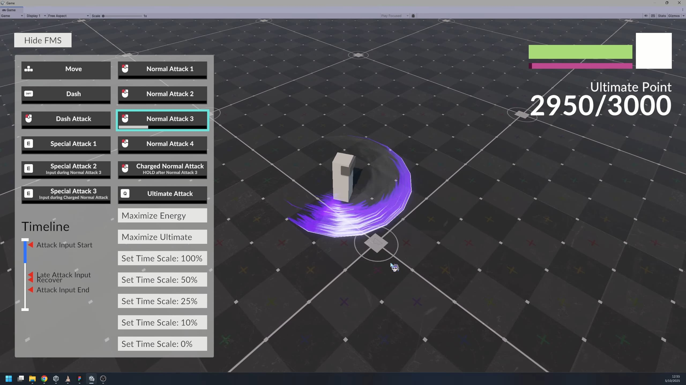
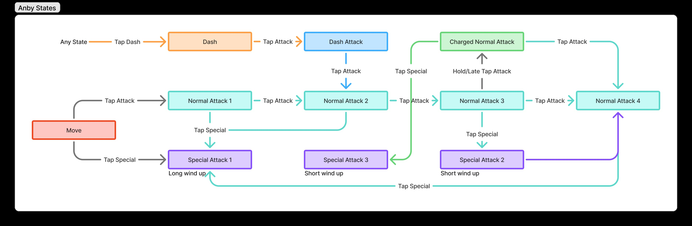

Modular Combat State Machine
This state machine system provide a general template for game elements with state based behaviors like characters, enemies, and UI. Providing a highly extendable system for many use cases, while providing debug tools to enhance editor workflow.
Demo Video
Technical Documentation
Key principles
- Versatile: The open-ended design makes this state machine suitable for many use cases, including UI and level logic.
- Modular: Actions and transitions are built from simple, reusable components—similar to how complex predicates can be formed by combining basic conditions.
- Decoupled: Uses event-based communication. The Unity GUI debugger reads from events without directly accessing the state machine, keeping the state machine independent from external tools.
Editor Tools
State Machine Debug Demo
In the demo video above, the state machine debug panel on the left can be used to visualize the state machine status. The timeline view shows the timeline progress and time marker for applicable states. Making it easier to catch time related bugs.
Custom Inspector
State Action Time In State is a concrete state action component which tracks how long has passed in the current state. The time stamps are used by a predicates for decisions for various decision. Since many decision shares the same time stamp, they are stored in a dictionary so editing the time will keep the reference.
The top section is drawn with a custom inspector script. This shows the timing between the time stamps in a more intuitive way, making editing easier.
This is a predicate which checks if time in state is in a specific range. A selector is used to quickly select the available tags.
Extensibility
Adding a new state in 1 hour
The video shows the unedited full process of adding a new state - the ultimate attack. It goes through things like creating state, adding transition to the state, resource management, and basic animation.
About this demo
Been playing a lot of Zenless Zone Zero as of late. I wanted to remake the character, Anby, with this project. While interactions like parry, dodge counter, and quick assist are missing, this was enough for now to demonstrate a modular and extendable state machine.